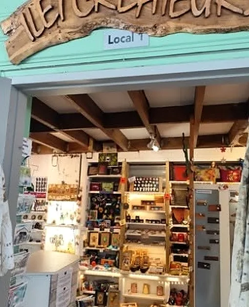
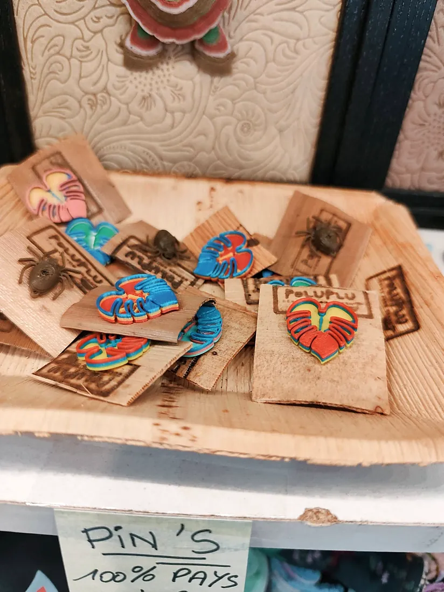
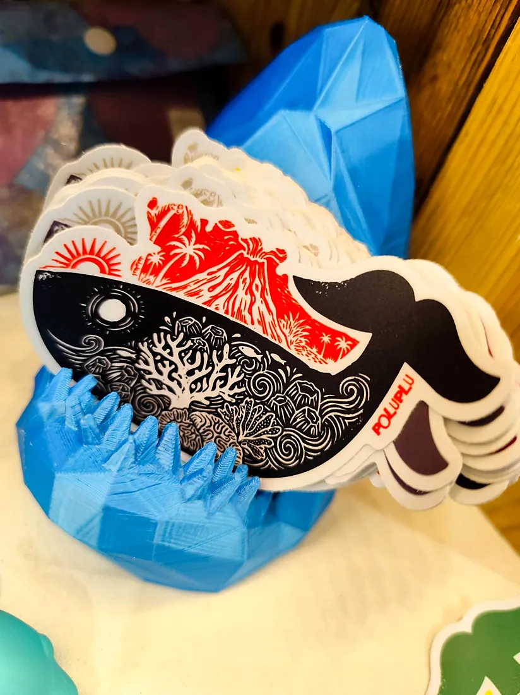
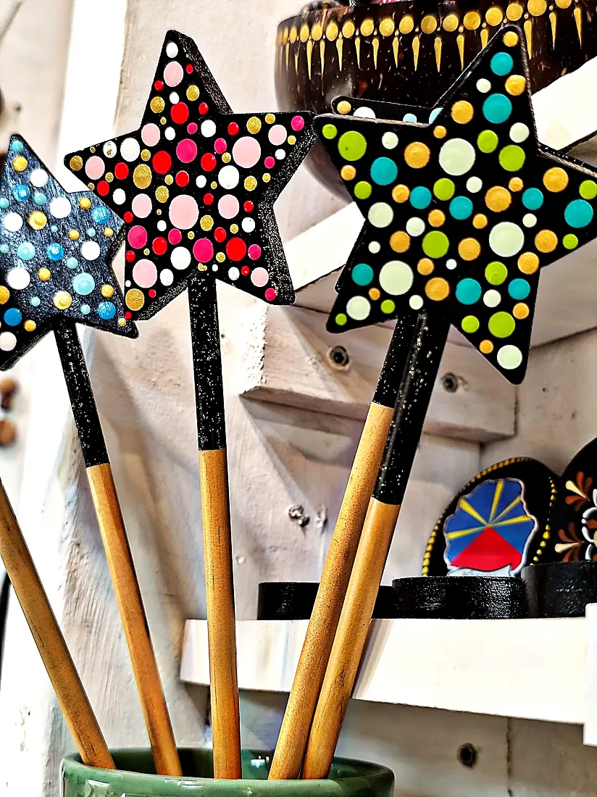
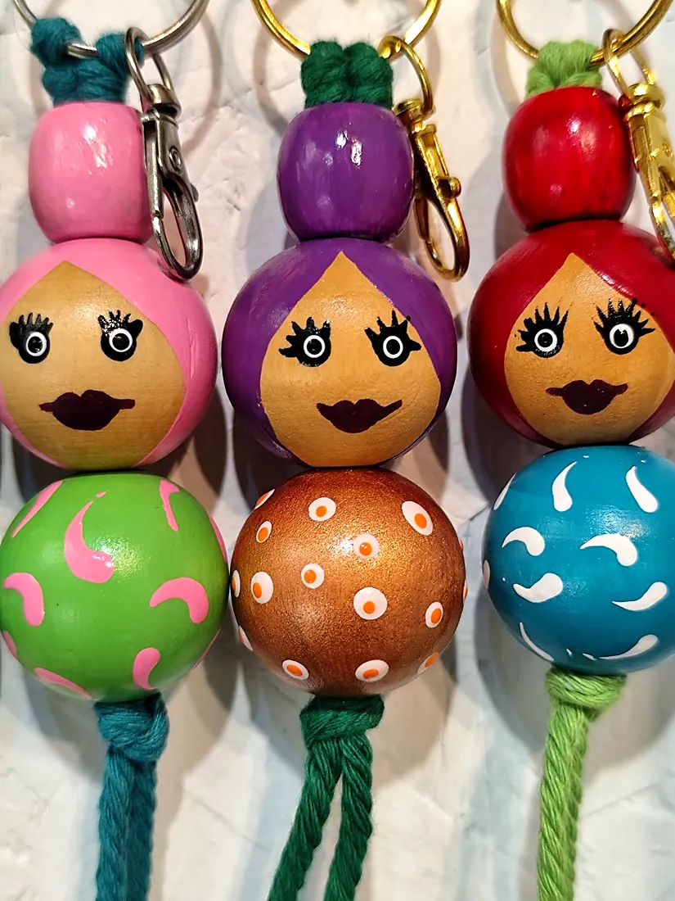

L’association
Un îlet de créateurs réunionnais
Ilet Créateurs est une boutique associative installée au local 1 du marché artisanal de Saint-Leu, rue du Général Lambert. Sa promesse : un artisanat de qualité, entièrement fabriqué sur l’île.
Des bijoux et magnets jusqu’aux pièces plus insolites, comme les insectes en papier et fil de cuivre : chaque objet raconte le savoir-faire d’un artisan d’ici.
- bois
- cuir
- céramique
- plastique recyclé
- lave
- métal
Tout juste arrivé
Les nouveautés d’octobre
Les nouveautés des créateurs Poluplu by O2 et Des ronds dans l’eau ! Tote bag, stickers, toupies, pins… Des créations gaies, colorées et made in Réunion !Ilet Créateurs sur Facebook, 8 octobre 2026




Faites glisser pour voir toutes les créations →
Ils en parlent
Une belle boutique où l’on peut retrouver 13 artisans-créateurs. Des créations originales et variées.Valérie F., recommandation sur la page Facebook d’Ilet Créateurs (2020)
Vous êtes créateur ?
Exposez vos créations au marché artisanal
La boutique propose un espace d’exposition éphémère : environ 0,75 m de large sur 2 m de haut, avec une grille d’exposition et des étagères. Durée d’exposition : 1 mois, tarif selon la période, en dépôt-vente. Produits éligibles : l’artisanat, hors secteur bijoux.
Envoyer ma candidature- Votre nom et votre marquepour faire connaissance
- Les produits proposésce que vous fabriquez, et comment
- Des photos et vos prixpar e-mail à l’association
Offrir pour Noël
Un cadeau 100 % péi, choisi avec le cœur
Une toupie pour les marmailles, une céramique, une bougie, un savon, un tote bag illustré… À Ilet Créateurs, chaque cadeau est fabriqué à La Réunion. Dites-nous pour qui vous cherchez : l’équipe vous aide à composer une création à offrir.
Demander une idée cadeau sur WhatsApp Proposition de rubrique, à adapter avec l’association.Venir
Marché artisanal de Saint-Leu
Local 1 · 112 rue du Général Lambert
97436 Saint-Leu
Horaires du marché
Du mardi au samedi : 9h – 18h
Le dimanche : 9h – 13h